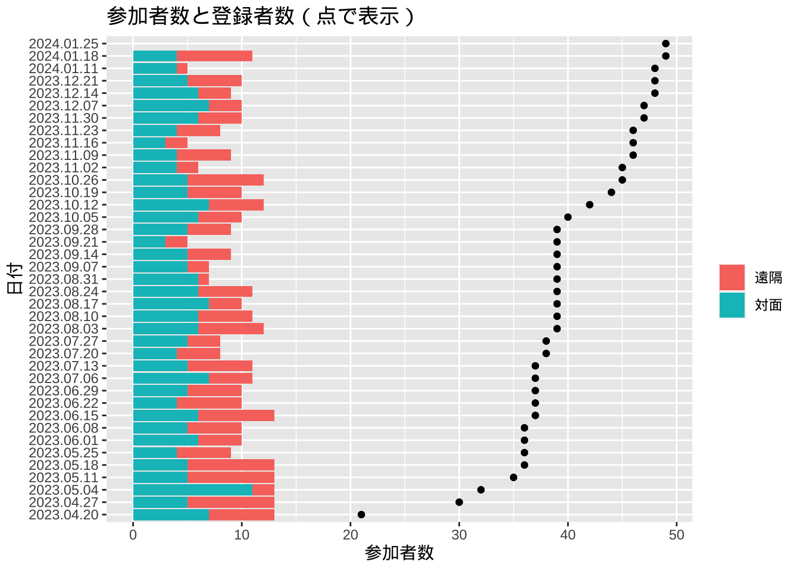

| マルコ | 見出し | マタイ | ルカ | ヨハネ |
|---|---|---|---|---|
| 1:1-8 | 洗礼者ヨハネ、悔い改めの洗礼を宣べ伝える | 3:1-12 | 3:1-9 | 1:19-28 |
| 1:9-11 | イエス、洗礼を受ける | 3:13-17 | 3:21-22 | NA |
| 1:12-13 | 試みを受ける | 4:1-11 | 4:1-13 | NA |
| 1:14-15 | ガリラヤで宣教を始める | 4:12-17 | 4:14-15 | NA |
| 1:16-20 | 四人の漁師を弟子にする | 4:18-22 | 5:1-11 | NA |
| 1:21-28 | 汚れた霊に取りつかれた男を癒やす | NA | 4:31-37 | NA |
| 1:29-34 | 多くの病人を癒やす | 8:14-17 | 4:38-41 | NA |
| 1:35-39 | 巡回して宣教する | NA | 4:42-44 | NA |
| 1:40-45 | 規定の病を患っている人を清める | 8:1-4 | 5:12-16 | NA |
| 2:1-12 | 体の麻痺した人を癒やす | 9:1-8 | 5:17-26 | NA |
| 2:13-17 | レビを弟子にする | 9:9-13 | 5:27-32 | NA |
| 2:18-22 | 断食についての問答 | 9:14-17 | 5:33-39 | NA |
| 2:23-28 | 安息日に麦の穂を摘む | 12:1-8 | 6:1-5 | NA |
| 3:1-6 | 手の萎えた人を癒やす | 12:9-14 | 6:6-11 | NA |
| 3:7-12 | 湖の岸辺の群衆 | NA | NA | NA |
| 3:13-19 | 十二人を選ぶ | 10:1-4 | 6:12-16 | NA |
| 3:20-30 | ベルゼブル論争 | 12:22-32 | 11:14-23; 12:10 | NA |
| 3:31-35 | イエスの母、きょうだい | 12:46-50 | 8:19-21 | NA |
| 4:1-9 | 「種を蒔く人」のたとえ | 13:1-9 | 8:4-8 | NA |
| 4:10-12 | たとえを用いて話す理由 | 13:10-17 | 8:9-10 | NA |
| 4:13-20 | 「種を蒔く人」のたとえの説明 | 13:18-23 | 8:11-15 | NA |
| 4:21-25 | 「灯」と「秤」のたとえ | NA | 8:16-18 | NA |
| 4:26-29 | 「成長する種」のたとえ | NA | NA | NA |
| 4:30-32 | 「からし種」のたとえ | 13:31-32 | 13:18-19 | NA |
| 4:33-34 | たとえを用いて語る | 13:34-35 | NA | NA |
| 4:35-41 | 突風を静める | 8:23-27 | 8:22-25 | NA |
| 5:1-20 | 悪霊に取りつかれたゲラサの人を癒やす | 8:28-34 | 8:26-39 | NA |
| 5:21-43 | ヤイロの娘とイエスの服に触れる女 | 9:18-26 | 8:40-56 | NA |
| 6:1-6 | ナザレで受け入れられない | 13:53-58 | 4:16-30 | NA |
| 6:7-13 | 十二人を派遣する | 10:1; 5-15 | 9:1-6 | NA |
| 6:14-29 | 洗礼者ヨハネ、殺される | 14:1-12 | 9:7-9 | NA |
| 6:30-44 | 五千人に食べ物を与える | 14:13-21 | 9:10-17 | 6:1-14 |
| 6:45-52 | 湖の上を歩く | 14:22-33 | NA | 6:15-21 |
| 6:53-56 | ゲネサレとで病人を癒やす | 14:34-36 | NA | NA |
| 7:1-23 | 昔の人の言い伝え | 15:1-20 | NA | NA |
| 7:24-30 | シリア・フェニキアの女の信仰 | 15:21-28 | NA | NA |
| 7:31-37 | 耳が聞こえず舌の回らない人を癒やす | NA | NA | NA |
| 8:1-10 | 四千人に食べ物を与える | 15:32-39 | NA | NA |
| 8:11-13 | 人々はしるしを欲しがる | 16:1-4 | NA | NA |
| 8:14-21 | ファリサイ派の人々とヘロデのパン種 | 16:5-12 | NA | NA |
| 8:22-26 | ベトサイダで盲人を癒やす | NA | NA | NA |
| 8:27-30 | ペトロ、イエスがメシアであると告白する | 16:13-20 | 9:18-21 | NA |
| 8:31-38; 9:1 | イエス、死と復活を予告する | 16:21-28 | 9:22-27 | NA |
| 9:2-13 | イエスの姿が変わる | 17:1-13 | 9:28-36 | NA |
| 9:14-29 | 汚れた霊に取りつかれた子を癒やす | 17:14-20 | 9:37-43a | NA |
| 9:30-32 | 再び自分の死と復活を予告する | 17:22-23 | 9:43b-45 | NA |
| 9:33-37 | いちばん偉い者 | 18:1-5 | 9:46-48 | NA |
| 9:38-41 | 逆らわない者は味方 | NA | 9:49-50 | NA |
| 9:42-50 | 罪への誘惑 | 18:6-9 | 17:1-2 | NA |
| 10:1-12 | 離婚について教える | 19:1-12 | NA | NA |
| 10:13-16 | 子どもを祝福する | 19:13-15 | 18:15-17 | NA |
| 10:17-31 | 金持ちの男 | 19:16-30 | 18:18-30 | NA |
| 10:32-34 | イエス、三度自分の死と復活を予告する | 20:17-19 | 18;31-34 | NA |
| 10:35-45 | ヤコブとヨハネの願い | 20:20-28 | NA | NA |
| 10:46-52 | 盲人バルティマイを癒やす | 20:29-34 | 18:35-43 | NA |
| 11:1-11 | エルサレムに迎えられる | 21:1-11 | 19:28-40 | 12:12-19 |
| 11:12-14 | いちじくの木を呪う | 21:18-19 | NA | NA |
| 11:15-19 | 神殿から商人を追い出す | 21:12-17 | 19:45-48 | 2:13-22 |
| 11:20-26 | 枯れたいちじくの木の教訓 | 21:20-22 | NA | NA |
| 11:27-33 | 権威についての問答 | 21:23-27 | 20:1-8 | NA |
| 12:1-12 | 「ぶどう園の農夫」のたとえ | 21:33-46 | 20:9-19 | NA |
| 12:13-17 | 皇帝への税金 | 22:15-22 | 20:20-26 | NA |
| 12:18-27 | 復活についての問答 | 22:23-33 | 20:27-40 | NA |
| 12:28-34 | 最も重要な戒め | 22:34-40 | 10:25-28 | NA |
| 12:35-37 | ダビデの子についての問答 | 22:41-45 | 20:41-44 | NA |
| 12:38-40 | 律法学者を非難する | 23:1-36 | 20:45-47 | NA |
| 12:41-44 | やもめの献金 | NA | 21:1-4 | NA |
| 13:1-2 | 神殿の崩壊を予告する | 24:1-2 | 21:5-6 | NA |
| 13:3-13 | 終末の徴 | 24:3-4 | 21:7-19 | NA |
| 13:14-23 | 大きな苦難を予告する | 24:15-28 | 21:20-24 | NA |
| 13:24-27 | 人の子が来る | 24:29-31 | 21:25-28 | NA |
| 13:28-32 | いちじくの木の教え | 24:32-35 | 21:29-33 | NA |
| 13:33-37 | 目を覚ましていなさい | 24:36-44 | NA | NA |
| 14:1-2 | イエスを殺す計略 | 26:1-5 | 22:1-2 | 11:45-53 |
| 14:3-9 | ベタニアで香油を注がれる | 26:6-13 | NA | 12:1-8 |
| 14:10-11 | ユダ、裏切りを企てる | 26:14-16 | 22:3-6 | NA |
| 14:12-21 | 過越の食事をする | 26:17-25 | 22:7-14; 21-23 | 13:21-30 |
| 14:22-25 | 主の晩餐 | 26:26-30 | 22:15-20 | NA |
| 14:26-31 | ペトロの離反を予告する | 26:31-35 | 22:31-34 | 13:36-38 |
| 14:32-42 | ゲッセマネで祈る | 26:36-46 | 22:39-46 | NA |
| 14:43-50 | 裏切られ、逮捕される | 26:47-56 | 22:47-53 | 18:3-12 |
| 14:51-52 | 一人の若者、逃げる | NA | NA | NA |
| 14:53-65 | 最高法院で裁判を受ける | 26:57-68 | 22:54-55; 61-71 | 18:13-14; 19-24 |
| 14:66-72 | ペトロ、イエスを知らないと言う | 26:69-75 | 22:56-62 | 18:15-18; 25-27 |
| 15:1-5 | ピラトから尋問される | 27:1-2; 11-14 | 23:1-5 | 18:28-38 |
| 15:6-15 | 死刑の判決を受ける | 27:15-26 | 23:13-25 | 18:39-19:16 |
| 15:16-20 | 兵士から侮辱される | 27:27-31 | NA | 19:2-2 |
| 15:21-32 | 十字架につけられる | 27:32-44 | 23:26-43 | 19:17-27 |
| 15:33-41 | イエスの死 | 27:45-56 | 23:44-49 | 19:28-30 |
| 15:42-47 | 墓に葬られる | 27:57-61 | 23:50-56 | 19:38-42 |
| 16:1-8 | 復活する | 28:1-8 | 24:1-12 | 20:1-10 |
| 16:9-11 | （結び一）マグダラのマリアに現れる | 28:9-10 | NA | 20:11-18 |
| 16:12-13 | 二人の弟子に現れる | NA | 24:13-35 | NA |
| 16:14-18 | 弟子たちを派遣する | 28:16-20 | 24:36-49 | 20:19-23 |
| 16:19-20 | 天に上げられる | NA | 24:50-53 | NA |
| NA | NA | NA | NA | NA |
| NA | 結び二 | NA | NA | NA |
| 7:16; 9:14; 46; 11:26; 15:28 | 底本に節が欠けている箇所の異本による訳文 | NA | NA | NA |
12 資料
12.1 マルコによる福音書表題
12.1.1 マルコに含まれていない表題
| マタイ | 見出し…2 | ルカ…3 | ルカ…4 | 見出し…5 |
|---|---|---|---|---|
| 1:1-17 | イエス・キリストの系図 | 3:23-38 | 1:1-4 | 献呈の言葉 |
| 1:18-24 | イエス・キリストの誕生 | 2:1-7 | 1:5-25 | 洗礼者ヨハネの誕生、予告される |
| 2:1-12 | 東方の博士たちが訪れる | NA | 1:26-38 | イエスの誕生が予告される |
| 2:13-15 | エジプトに避難する | NA | 1:39-45 | マリア、エリザベトを訪ねる |
| 2:16-18 | ヘロデ、こどもを皆殺しにする | NA | 1:46-56 | マリアの讃歌 |
| 2:19-23 | エジプトから帰国する | NA | 1:57-66 | 洗礼者ヨハネの誕生 |
| NA | NA | NA | 1:67-80 | ザカリアの預言 |
| NA | NA | NA | 2:8-21 | 羊飼いと天使 |
| NA | NA | NA | 2:22-38 | 神殿で献げられる |
| NA | NA | NA | 2:39-40 | ナザレに帰る |
| NA | NA | NA | 2:41-52 | 神殿での少年イエス |
| 4:23-25 | おびただしい病人を癒やす | 6:17-19 | NA | NA |
| 5:1-2 | 山上の説教を始める | NA | NA | NA |
| 5:3-12 | 幸い | 6:20-23 | NA | NA |
| 5:17-20 | 律法について | NA | NA | NA |
| 5:21-26 | 腹を立ててはならない | NA | NA | NA |
| 5:27-30 | 姦淫してはならない | NA | NA | NA |
| 5:33-37 | 誓ってはならない | NA | NA | NA |
| 5:38-42 | 復讐してはならない | 6:29-30 | NA | NA |
| 5:43-48 | 敵を愛しなさい | 6:27; 32-36 | NA | NA |
| 6:1-4 | 施しをするときには | NA | NA | NA |
| 6:5-15 | 祈るときには | 11:2-4 | NA | NA |
| 6:16-18 | 断食をするときには | NA | NA | NA |
| 6:19-21 | 天に宝を積みなさい | 12:33-34 | NA | NA |
| 6:22-23 | 目は体の灯 | 11:34-36 | NA | NA |
| 6:24-24 | 神と富 | 16:13-13 | NA | NA |
| 6:25-34 | 思い煩うな | 12:22-32 | NA | NA |
| 7:1-6 | 人を裁くな | 6:37-38; 41-42 | NA | NA |
| 7:7-12 | 求めなさい | 11:9-13 | NA | NA |
| 7:13-14 | 狭い門 | 13:24-24 | NA | NA |
| 7:15-20 | 実によって木を知る 12:33 | 6:43-44 | NA | NA |
| 7:21-23 | あなたがたのことは知らない | 13:25-27 | NA | NA |
| 7:24-29 | 家と土台 | 6:47-49 | NA | NA |
| 8:5-13 | 百人隊長の子を癒やす | 7:1-10 | 7:11-17 | やもめの息子を生き返らせる |
| 8:18-22 | 弟子の覚悟 | 9:57-62 | 7:36-50 | 罪深い女を赦す |
| 9:27-31 | 二人の盲人を癒やす | NA | 8:1-3 | イエスに仕える女たち |
| 9:32-34 | 口の利けない人を癒やす | NA | 9:51-56 | サマリア人から歓迎されない |
| 9:35-38 | 群衆に同情する | NA | 10:1-12 | 七十二人を派遣する |
| 10:26-31 | 恐るべき者 | 12:2-7 | 10:17-20 | 七十二人、帰って来る |
| 10:32-33 | 人前でイエスを認める | 12:8-9 | 10:25-37 | 善いサマリア人 |
| 10:34-39 | 平和でなく剣を | 12:51-53; 14:26-27 | 10:38-42 | マルタとマリア |
| 11:2-19 | 洗礼者ヨハネとイエス | 7:18-35 | 11:27-28 | 真の幸い |
| 11:20-24 | 悔い改めない町を叱る | 10:13-15 | 12:1-3 | 偽善に気をつけさせる |
| 11:25-30 | 私のもとに来なさい | 10:21-22 | 12:13-21 | 「愚かな金持ち」のたとえ |
| 12:15-21 | 傷ついた葦を折ることはない | NA | 13:1-5 | 悔い改めなければ滅びる |
| 12:33-37 | 実によって木を知る 7:16-20 | 6:43-45 | 13;6-9 | 「実がならないいちじくの木」のたとえ |
| 12:43-45 | 汚れた霊が戻って来る | 11:24-26 | 13:10-17 | 安息日に、腰の曲がった女を癒やす |
| 13:24-30 | 「毒麦」のたとえ | NA | 14:1-6 | 安息日に水腫の人を癒やす |
| 13:36-43 | 「毒麦」のたとえの説明 | NA | 14;7-14 | 客と招待する者への教訓 |
| 13:44-50 | 「天国」のたとえ | NA | 15:8-10 | 「無くした銀貨」のたとえ |
| 13:51-52 | 天国のことを学んだ学者 | NA | 15:11-32 | 「いなくなった息子」のたとえ |
| 15:29-31 | 大勢の病人を癒やす | NA | 16:1-13 | 「不正な管理人」のたとえ |
| 18:10-14 | 「迷い出た羊」のたとえ | 15:3-7 | 16:19-31 | 金持ちとラザロ |
| 18:15-20 | きょうだいの忠告 | 17:3-3 | 17:11-19 | 規定の病を患っている十人の人を清める |
| 18:21-35 | 「仲間を赦さない家来」のたとえ | NA | 18:1-8 | 「やもめと裁判官」のたとえ |
| 20:1-16 | 「ぶどう園の労働者」のたとえ | NA | 18:9-14 | 「ファリサイ派の人と徴税人」のたとえ |
| 21:28-32 | 「二人の息子」のたとえ | NA | 19:1-10 | 徴税人ザアカイ |
| 22:1-14 | 「婚礼の祝宴」のたとえ | 14:15-24 | NA | NA |
| 23:37-39 | エルサレムのために嘆く | 13:34-35 | 21:34-38 | 目を覚ましていなさい |
| 24:45-51 | 忠実な僕と悪い僕 | 12:41-48 | 22:24-30 | いちばん偉い者 |
| 25:1-12 | 「十人のおとめ」のたとえ | NA | NA | NA |
| 25:14-30 | 「タラントン」のたとえ | 19:11-27 | NA | NA |
| 25:31-46 | すべての民族を裁く | NA | NA | NA |
| 27:3-10 | ユダ自殺する | NA | NA | NA |
| 27:62-65 | 番兵、墓を見張る | NA | 22:35-38 | 財布と袋と剣 |
| 28:11-15 | 番兵、報告する | NA | 23:6-12 | ヘロデから尋問される |
12.2 登録・対面・遠隔
